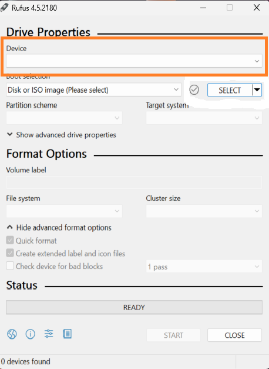
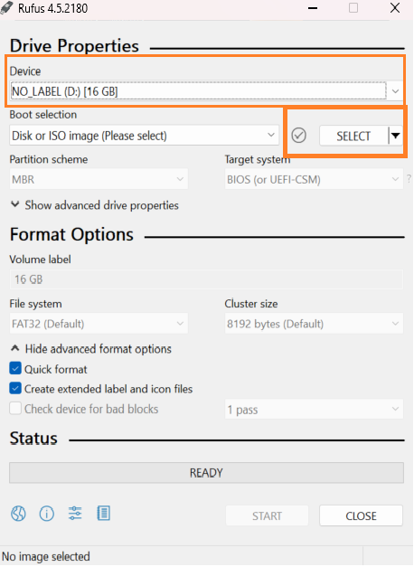
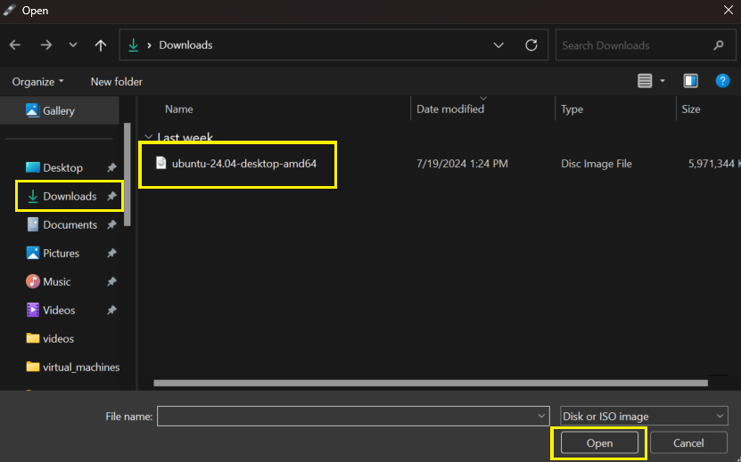
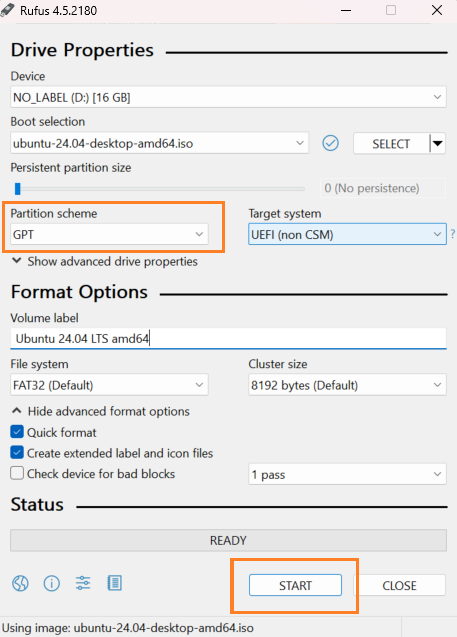
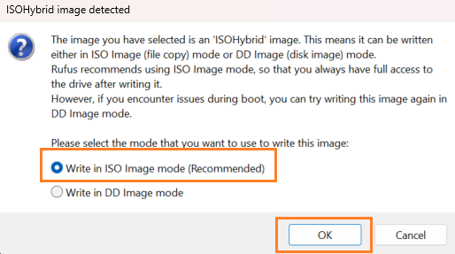
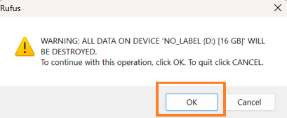
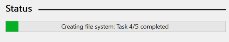
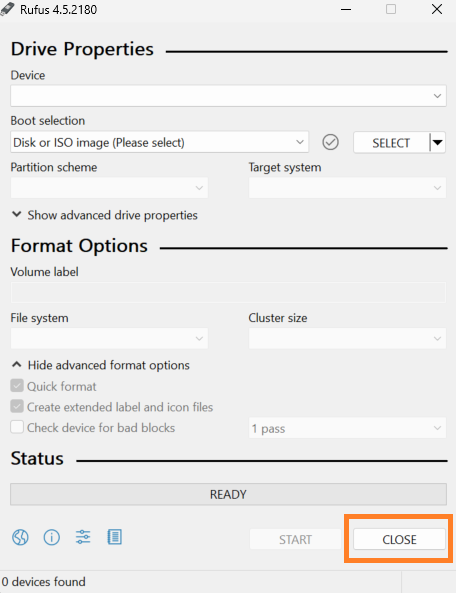

Setting up a USB for Dual-Booting
Section Breakdown:
What You Need for Installation:
- A computer running Windows 10/11
- A USB Flash drive (8GB or larger)
- A Linux distribution (Ubuntu)
Required Software (Ubuntu & Rufus)
- Download and install Rufus for your operating system.
- Download the Ubuntu ISO file.
- Download CACkey and save it to the USB drive.
Steps to Dual Boot Linux and Windows 11
1. Prepare the USB Drive with Rufus
- Download and install Rufus on your operating system.
- Insert a USB drive into your computer and open Rufus.

- In Rufus, select your USB drive using the Device dropdown menu, then Click SELECT and choose the Ubuntu ISO file you downloaded.


- Select the GPT partition scheme and Click START to write the OS to the USB drive. (GPT is the latest partition scheme and necessary for installing Ubuntu on a UEFI system.)

- When prompted, select "Write in ISO image mode" and Click OK.

- Carefully read the prompts to ensure that the Linux OS will be written to the correct drive then Click Ok.


- Once the process is complete, Click CLOSE to exit Rufus and remove the USB drive from your computer. (This step is only necessary if you are preparing the USB on a different machine.)

By following these steps, you'll be ready to configure your BIOS and proceed with the installation of Ubuntu alongside Windows 11. Click on the link above to continue with the BIOS configuration.
QuickLinks: